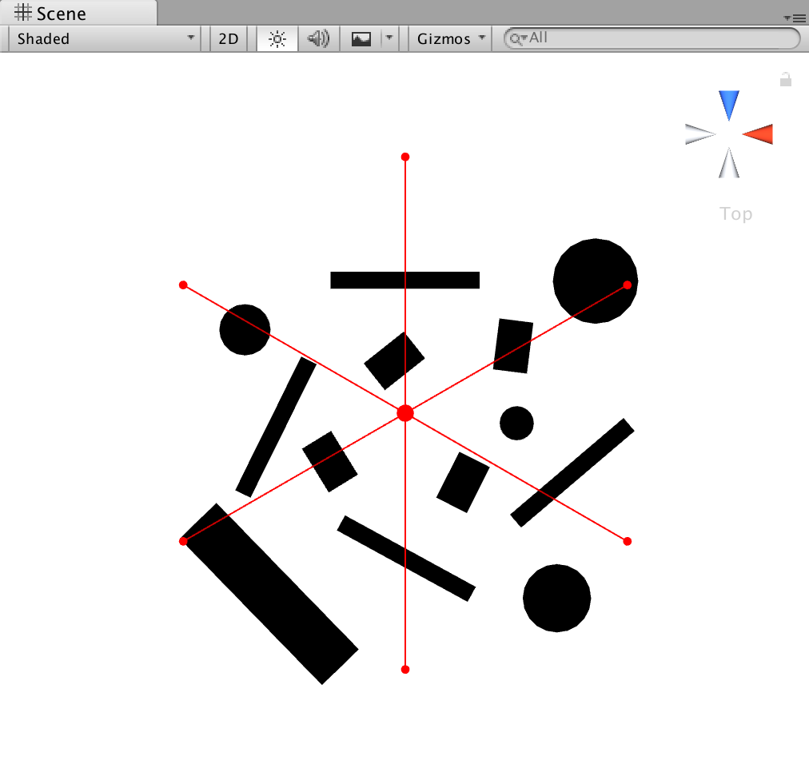
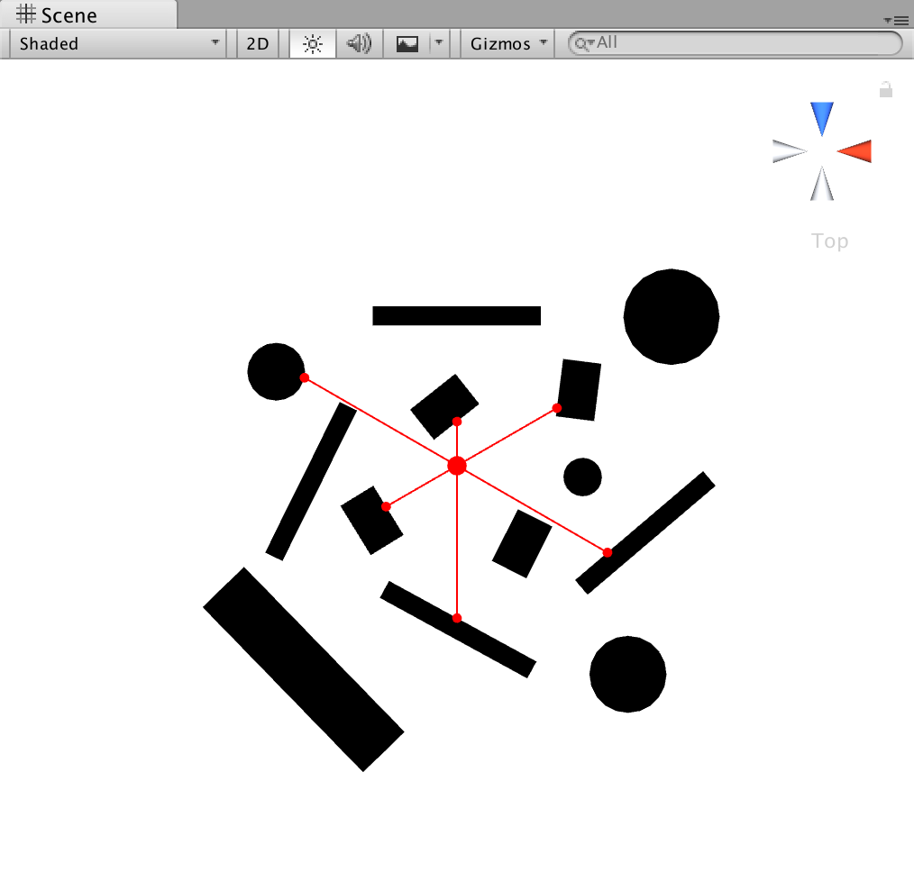
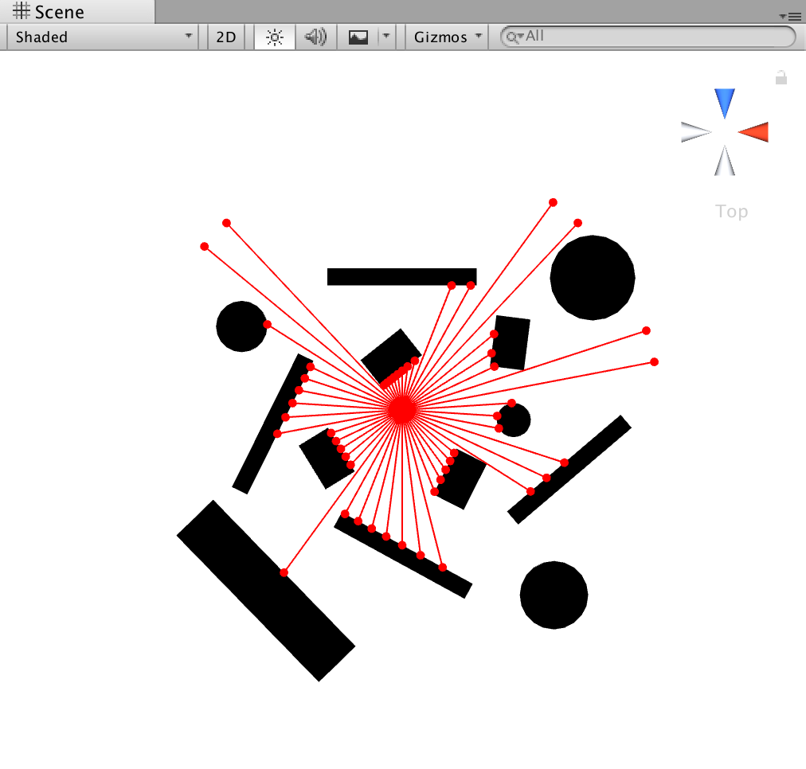
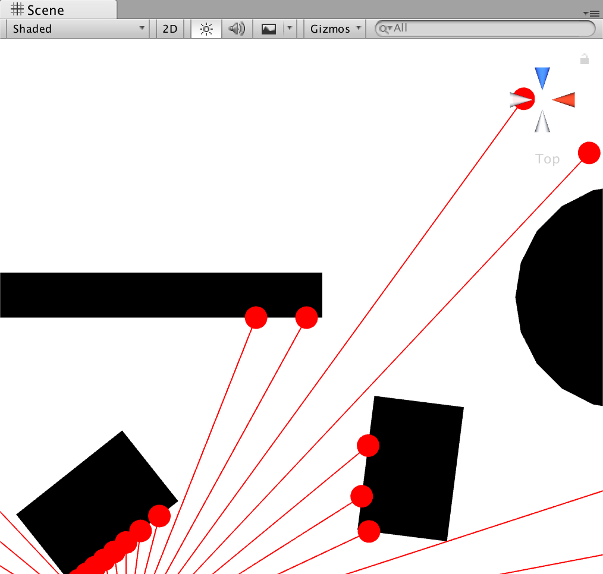
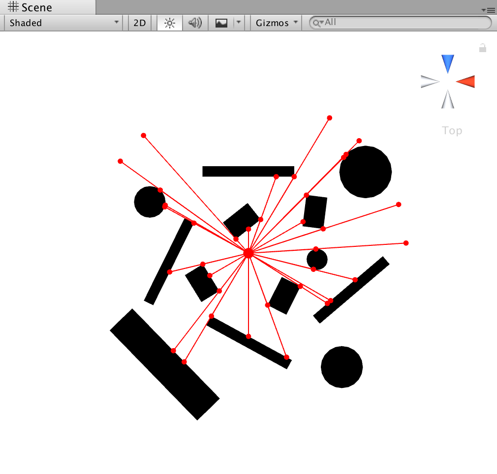
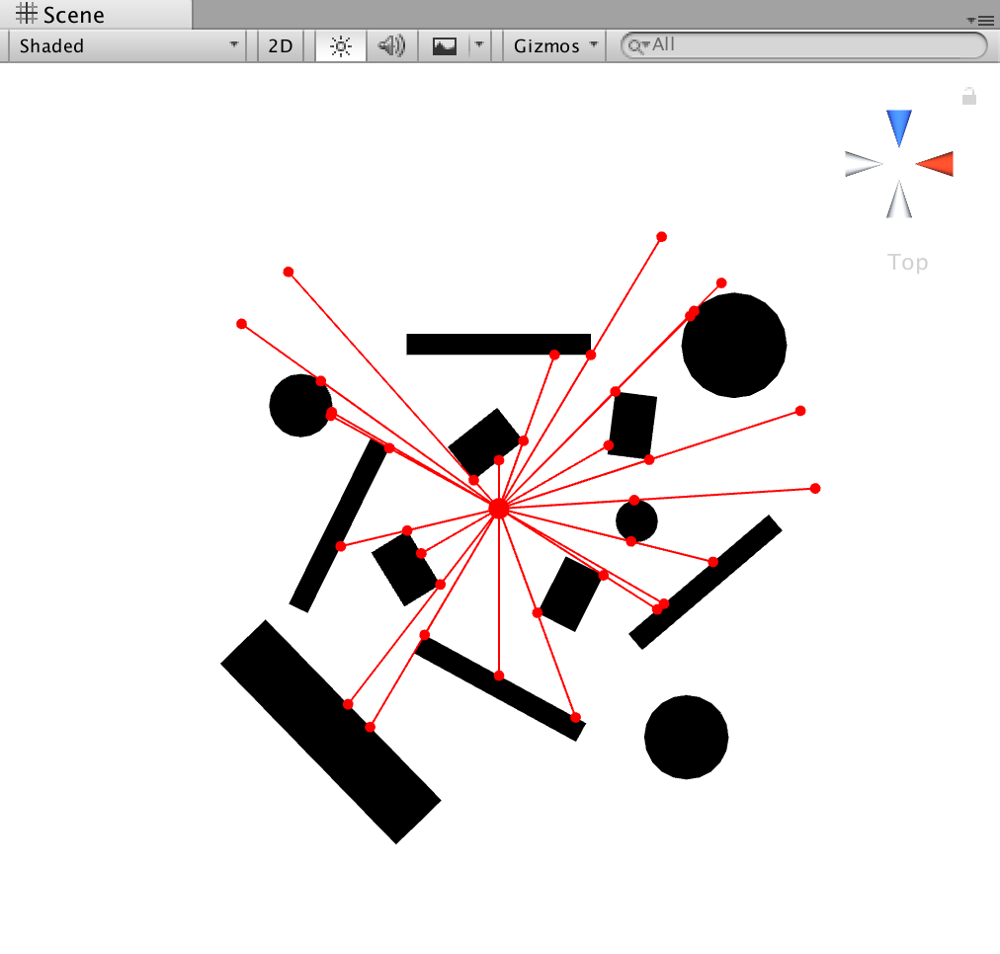
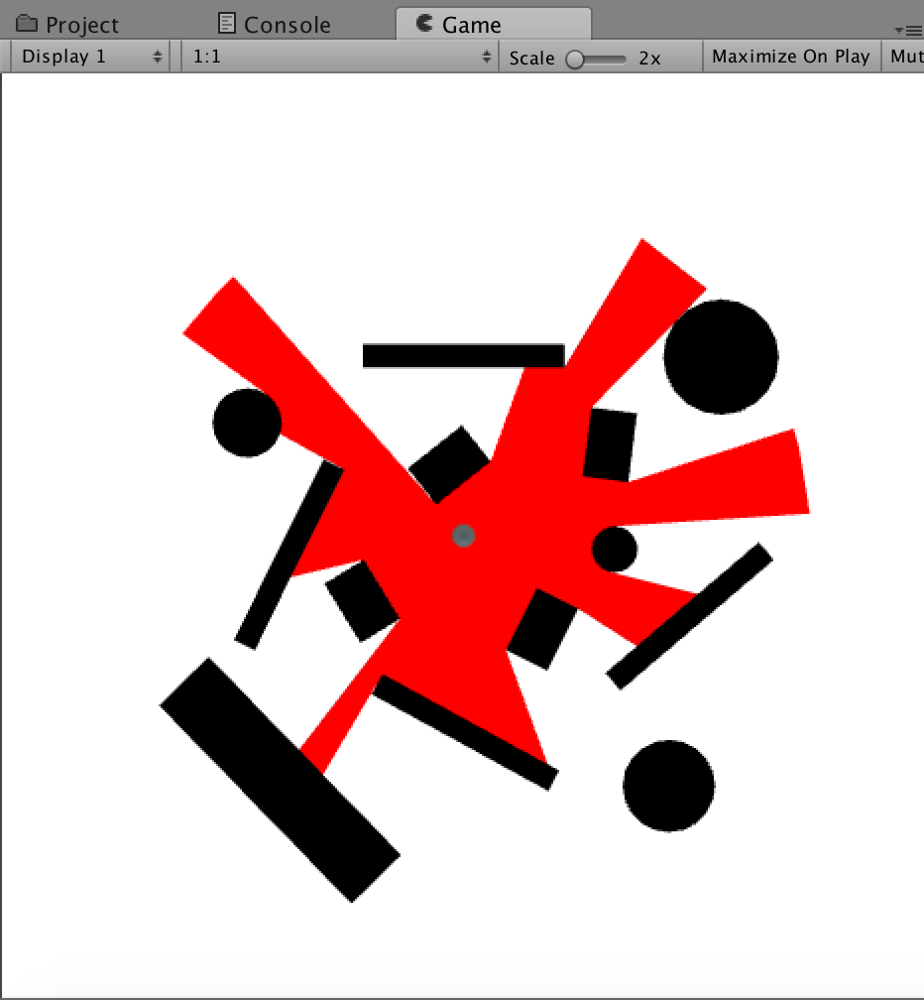
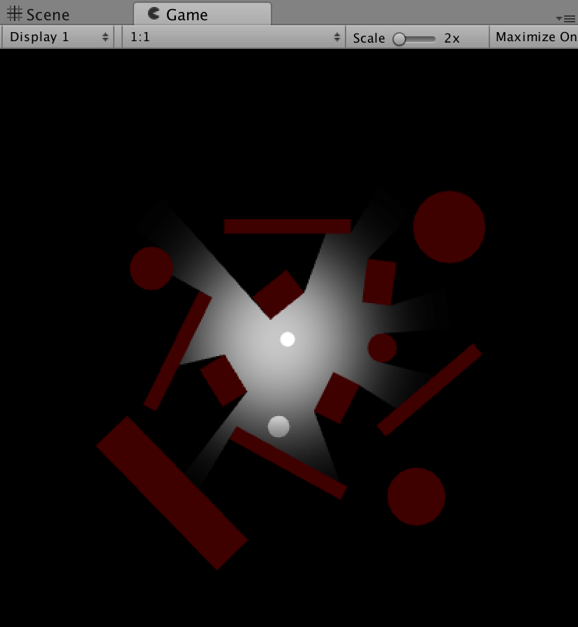
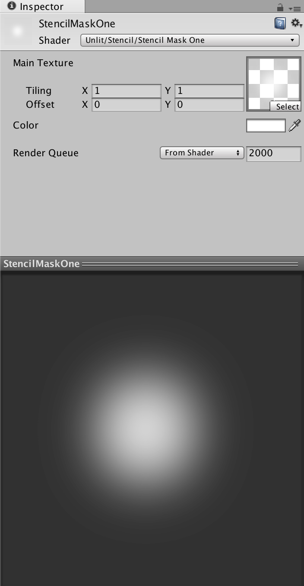

視野範圍效果，在很多遊戲中都可以發現這效果的存在，像是 2015 巴哈姆特 ACG 創作大賽遊戲組金賞的 “落跑藍圖” 就運用了這個效果來作為畫面呈現方式，透過顯示敵人的警戒範圍，玩家需要透過不同的策略來抵達目的地。
這次透過幾個階段的實作完成了這個好玩又酷炫的視野範圍效果，視野範圍偵測、優化偵測方式、程序化 Mesh、模板測試，以下分別為每個階段的實作進行解說。
PS. 本次實作的環境為 Unity 5.5.0f3
在進行視野範圍偵測之前，需要先定義出射線所包含的資料結構。
using UnityEngine;
public class RayData
{
public Vector3 m_start;
public float m_distance;
public float m_angle;
public Vector3 m_direction;
public Vector3 m_end;
public Collider m_hitCollider;
public bool m_hit;
public RayData(Vector3 start, float angle, float distance)
{
m_start = start;
m_distance = distance;
UpdateDirection(angle);
}
public void UpdateDirection(float angle)
{
m_angle += angle;
m_direction = DirectionFromAngle(m_angle);
m_end = m_start + m_direction * m_distance;
}
private Vector3 DirectionFromAngle(float angle)
{
float pi = Mathf.Deg2Rad;
return new Vector3(Mathf.Sin(angle * pi), 0, Mathf.Cos(angle * pi));
}
public static bool IsHittingSameObject(RayData data1, RayData data2)
{
return data1.m_hitCollider == data2.m_hitCollider;
}
}將射線的資料定義完成後，就可以開始進行範圍偵測，而這個部分也是這次實作中運算最複雜且最核心的部份。
在最一開始先透過簡單的運算，計算出射線的起始點、方向與半徑。
private RayData[] GetOriginalDatas()
{
RayData[] rayDatas = new RayData[_divide + 1];
Vector3 center = transform.position;
float startAngle = transform.eulerAngles.y -_angle / 2;
float angle = _angle / _divide;
RayData rayDataCache = null;
for(int i = 0; i <= _divide; i++)
{
rayDataCache = new RayData(center, startAngle + angle * i, _radius);
rayDatas[i] = rayDataCache;
}
return rayDatas;
}
接著透過射線的碰撞檢測獲得碰撞點位置，並重新定義射線。
private RayData[] GetNormalDatas()
{
RayData[] rayDatas = GetOriginalDatas();
for (int i = 0; i < rayDatas.Length; i++)
{
UpdateRaycast(rayDatas[i]);
}
return rayDatas;
}
private void UpdateRaycast(RayData rayData)
{
rayData.m_hit = Physics.Raycast(transform.position, rayData.m_direction, out _hit, _radius);
if (rayData.m_hit)
{
rayData.m_hitCollider = _hit.collider;
rayData.m_end = _hit.point;
}
else
{
rayData.m_hitCollider = null;
rayData.m_end = rayData.m_start + rayData.m_direction * _radius;
}
}
在這邊因為射線的密度很低，所以出來的結果不盡理想，試著將射線的密度調高。

到這邊為止，做出來的效果已經相當近似於我想要的效果，但是在某些情況下，還是會有誤差產生。

且隨著射線的密度上升，會使效能開始超出預期，可以透過一些簡單的判斷，來避免掉一些不必要的效能消耗，所以必須要將偵測方式做個調整，這邊嘗試的優化方式有逼近法以及二分逼近法。
由於障礙物的邊界往往會出現在任兩條相鄰射線之間，所以一種較簡單的做法就是在確定相鄰射線所碰觸的碰撞體不同時，透過逼近的方式使其中一條射線緩慢的逼近另一條，透過這種方式來取得相鄰射線中間的邊界。
private EdgeData GetApproximationEdge(RayData startEdgeRayData, RayData endEdgeRayData)
{
if (_approximationPrecision <= 0) { return null; } Vector3 center = transform.position; float maxAngle = Vector3.Angle(startEdgeRayData.m_direction, endEdgeRayData.m_direction); float curAngle = _approximationPrecision; RayData edgeRayData = new RayData(center, startEdgeRayData.m_angle + _approximationPrecision, _radius); UpdateRaycast(edgeRayData); while (RayData.IsHittingSameObject(startEdgeRayData, edgeRayData)) { curAngle += _approximationPrecision; if (curAngle > maxAngle)
{
edgeRayData = null;
break;
}
edgeRayData.UpdateDirection(_approximationPrecision);
UpdateRaycast(edgeRayData);
}
if (edgeRayData == null)
{
return null;
}
EdgeData edgeData = new EdgeData();
edgeData.m_secondRay = edgeRayData;
edgeData.m_firstRay = new RayData(center, edgeRayData.m_angle - _approximationPrecision, _radius);
UpdateRaycast(edgeData.m_firstRay);
return edgeData;
}
在逼近法中，透過慢慢的逼近邊界來檢測物體邊界，這種做法相當於在任兩條射線中，細分多條射線來作為判斷，會使效能有許多額外損耗。所以透過逼近二分法，混合逼近法與二分法，來更加優化這一階段的計算次數。
private EdgeData GetBisectionEdge(RayData startEdgeRayData, RayData endEdgeRayData)
{
if (!startEdgeRayData.m_hit && !endEdgeRayData.m_hit)
{
return GetApproximationEdge(startEdgeRayData, endEdgeRayData);
}
if (RayData.IsHittingSameObject(startEdgeRayData, endEdgeRayData))
{
return null;
}
Vector3 center = transform.position;
EdgeData edgeData = new EdgeData();
float angle = 0;
RayData edgeRayData = null;
for (int i = 0; i < _bisectionCount; i++)
{
angle = (startEdgeRayData.m_angle + endEdgeRayData.m_angle) / 2;
edgeRayData = new RayData(center, angle, _radius);
UpdateRaycast(edgeRayData);
if (RayData.IsHittingSameObject(startEdgeRayData, edgeRayData))
{
startEdgeRayData = edgeRayData;
}
else
{
endEdgeRayData = edgeRayData;
}
}
edgeData.m_firstRay = startEdgeRayData;
edgeData.m_secondRay = endEdgeRayData;
return edgeData;
}
完成範圍偵測與優化偵測方式後，我們已經可以直接透過 Editor Scene 來看到射線的焦點情況，所以接下來就是要在 Runtime 透過動態產生程序化 Mesh 來畫出這個偵測範圍。
一般的 Mesh 由三個基本要素所組成，Vertex、Triangle 與 UV，每三個頂點可以形成一個三角形。透過這個簡單的概念，去重新計算 Mesh 生成所需要的要素。
private void GenerateMesh()
{
int meshCount = _rayDatas.Length - 1;
int vertexCount = meshCount * 2 + 1;
int triangleCount = meshCount * 3;
_vertices = new Vector3[vertexCount];
_vertices[0] = Vector3.zero;
for (int i = 1, mesh = 0; i < _vertices.Length; i += 2, mesh++)
{
_vertices[i] = transform.InverseTransformPoint(_rayDatas[mesh].m_end);
_vertices[i + 1] = transform.InverseTransformPoint(_rayDatas[mesh + 1].m_end);
}
_triangles = new int[triangleCount];
for (int i = 0; i < meshCount; i ++)
{
_triangles[i * 3] = 0;
_triangles[i * 3 + 1] = i * 2 + 1;
_triangles[i * 3 + 2] = i * 2 + 2;
}
_uvs = new Vector2[vertexCount];
_uvs[0] = new Vector2(0.5f, 0.5f);
float lerp = 0;
Vector3 direction = Vector3.zero;
for (int i = 1, mesh = 0; i < _uvs.Length; i += 2, mesh++)
{
lerp = _vertices[i].magnitude / _radius;
direction = _rayDatas[mesh].m_direction * _rayDatas[mesh].m_distance * 0.6f / _radius;
_uvs[i] = new Vector2(direction.x, direction.z) * lerp + _uvs[0];
lerp = _vertices[i + 1].magnitude / _radius;
direction = _rayDatas[mesh + 1].m_direction * _rayDatas[mesh].m_distance * 0.6f / _radius;
_uvs[i + 1] = new Vector2(direction.x, direction.z) * lerp + _uvs[0];
}
_mesh.Clear();
_mesh.vertices = _vertices;
_mesh.triangles = _triangles;
_mesh.uv = _uvs;
_mesh.RecalculateNormals();
_meshFilter.mesh = _mesh;
}

視野範圍效果到這邊為止已經完成了，但是可以再加個小細節，來提升畫面呈現品質。目前的呈現效果中，只有光與影的互動，並沒有物件的互動，所以可以在這邊加入一個簡單的 Stencil Shader 來呈現。透過 Stencil Shader，針對有被視野範圍平面所包覆的範圍做模板測試，通過模板測試後，利用 Blend DstColor SrcColor 來將顏色混合後，就完成了這次所實現的視野範圍的最終效果。
StencilMaskOne.shader
Shader "Unlit/Stencil/Stencil Mask One"
{
Properties
{
_MainTex ("Main Texture", 2D) = "white" {}
_Color ("Color", Color) = (1, 1, 1, 1)
}
SubShader
{
Tags {"RenderType"="Opaque" "PreviewType" = "Plane"}
Stencil
{
Ref 1
Comp always
Pass replace
}
Pass
{
Blend SrcAlpha OneMinusSrcAlpha
CGPROGRAM
#pragma vertex vert
#pragma fragment frag
#include "UnityCG.cginc"
struct appdata
{
float4 vertex : POSITION;
float2 uv : TEXCOORD0;
};
struct v2f
{
float4 vertex : SV_POSITION;
float2 uv : TEXCOORD0;
};
sampler2D _MainTex;
float4 _Color;
v2f vert (appdata v)
{
v2f o;
o.vertex = UnityObjectToClipPos(v.vertex);
o.uv = v.uv;
return o;
}
fixed4 frag (v2f i) : SV_Target
{
fixed4 col = tex2D(_MainTex, i.uv);
return col;
}
ENDCG
}
}
}StencilEqualOne.shader
Shader "Unlit/Stencil/Stencil Equal One"
{
Properties
{
_Color ("Color", Color) = (1, 1, 1, 1)
}
SubShader
{
Tags {"RenderType"="Opaque" }
Stencil
{
Ref 1
Comp equal
Pass replace
}
Pass
{
Blend DstColor SrcColor
CGPROGRAM
#pragma vertex vert
#pragma fragment frag
#include "UnityCG.cginc"
struct appdata
{
float4 vertex : POSITION;
};
struct v2f
{
float4 vertex : SV_POSITION;
};
fixed4 _Color;
v2f vert (appdata v)
{
v2f o;
o.vertex = UnityObjectToClipPos(v.vertex);
return o;
}
fixed4 frag (v2f i) : SV_Target
{
return _Color;
}
ENDCG
}
}
}StencilMaskOne.material

這次透過組合一些簡單的功能，來完成這個有趣的視野範圍效果，但最終實現出的版本，在效能上還是有許多進步的空間。在業界前輩的指導、討論後，理解到可以利用 Shader 來作為同樣功能的實現，透過實際光源的位置去重新計算頂點位置，用這種方式來畫出陰影部分，也因為是將運算工作交付給 GPU 處理，所以效能上能得到大幅改善。若各位有興趣繼續研究這個效果，可以往這個方向去進行研究。
GitHub
Field of View